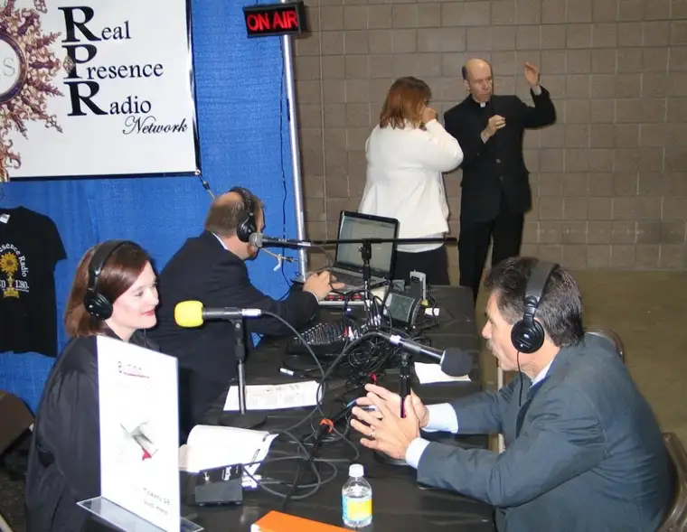
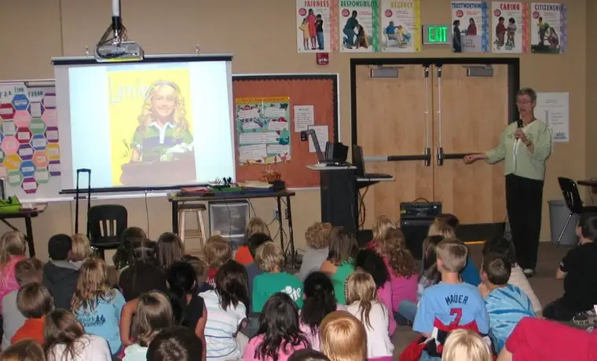
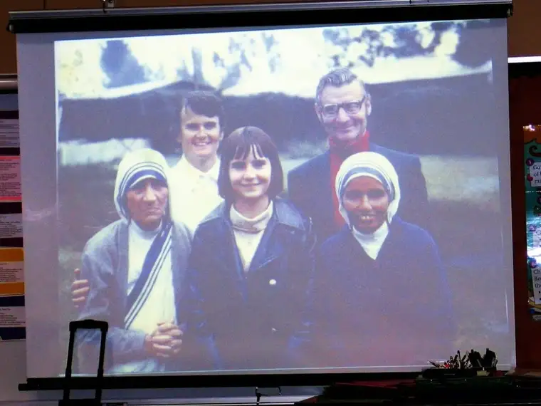
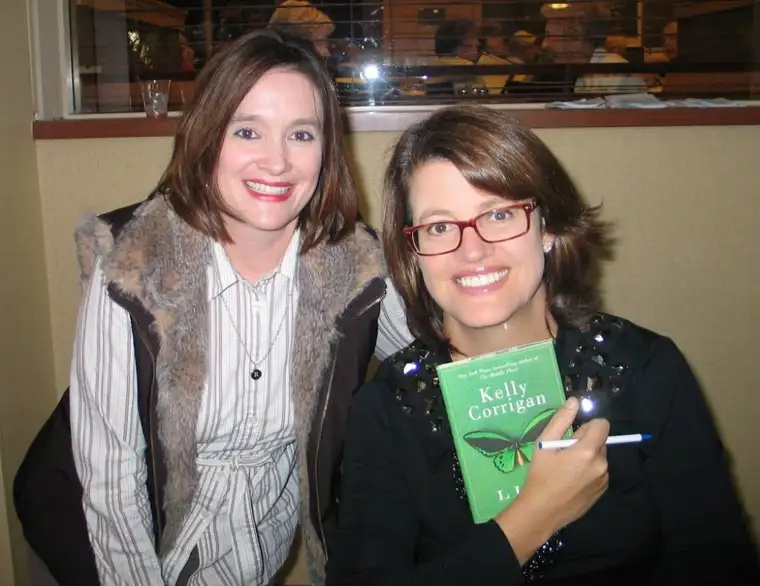

I’ve been pinching myself so much this week I might have to break out the bandages soon.
This is the kind of week that lives on forever in the heart of a writer. I’ve had the great pleasure of crossing paths with three amazing authors this week and will spend an entire weekend with another in the coming days.
It all began Saturday when I had the great fortune to sit across from and interview author and national Catholic radio host, Dr. Ray Guarendi, someone I greatly admire because of his strong faith and solid parenting insight, which he shares with humor weekly on Ave Maria Radio.

{kind=link}

{kind=link}

{kind=link}

A couple of my favorite quotes from Kelly’s talk:
{kind=link}
“The emotional content of our life really doesn’t change. Having a bad hair day as a kid and watching your hair fall out from cancer…the feelings are mostly the same.”
“Life is like hang-gliding. You fly from thermal to thermal looking for a lift…And sometimes you follow other fliers into the turbulence so you can get a lift.”
“Being in Children’s Hospital (with my daughter) put me in touch with what a bold and dangerous thing it is to be a parent.”
Finally, by the time you read this I likely will be on a plane headed to Pennsylvania to take in a writer’s workshop offered by the Highlights Foundation. As if that wasn’t enough (combined by the fact that my friend Mary will be with me), I also learned late last week that Lenore Look, a dear soul and friend (author of Ruby Lu Brave and True and the Alvin Ho series) is going to be in attendance as well.
It doesn’t get much better than this!
If you have yet to be introduced to Kelly Corrigan, consider clicking on this link of Kelly doing a reading of her essay, “Transcending: Words of Women and Strength.” You won’t regret it!
Q4U: If you could meet and hang out with a famous author for a day, who would it be and why?